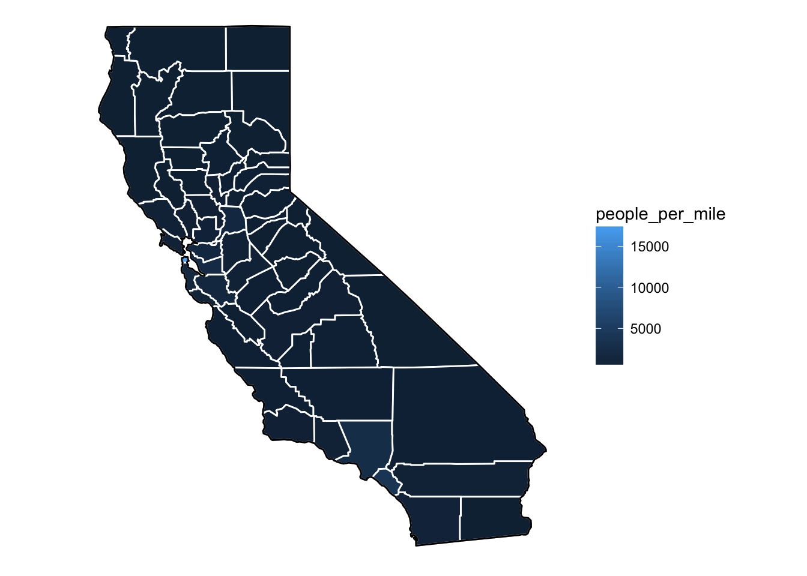
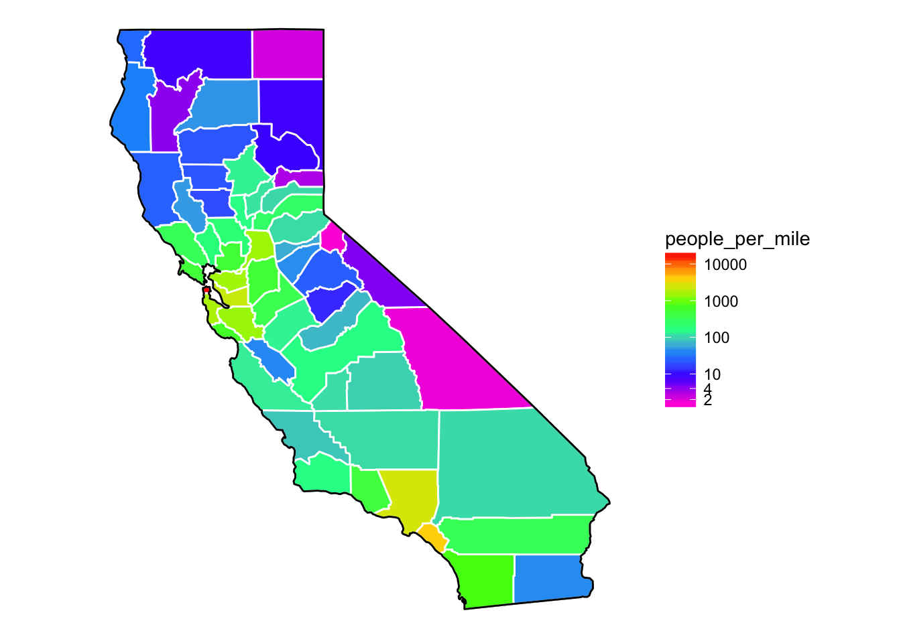
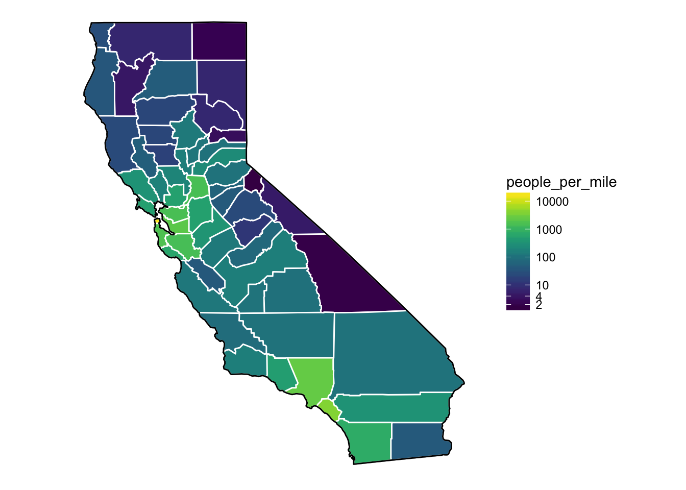
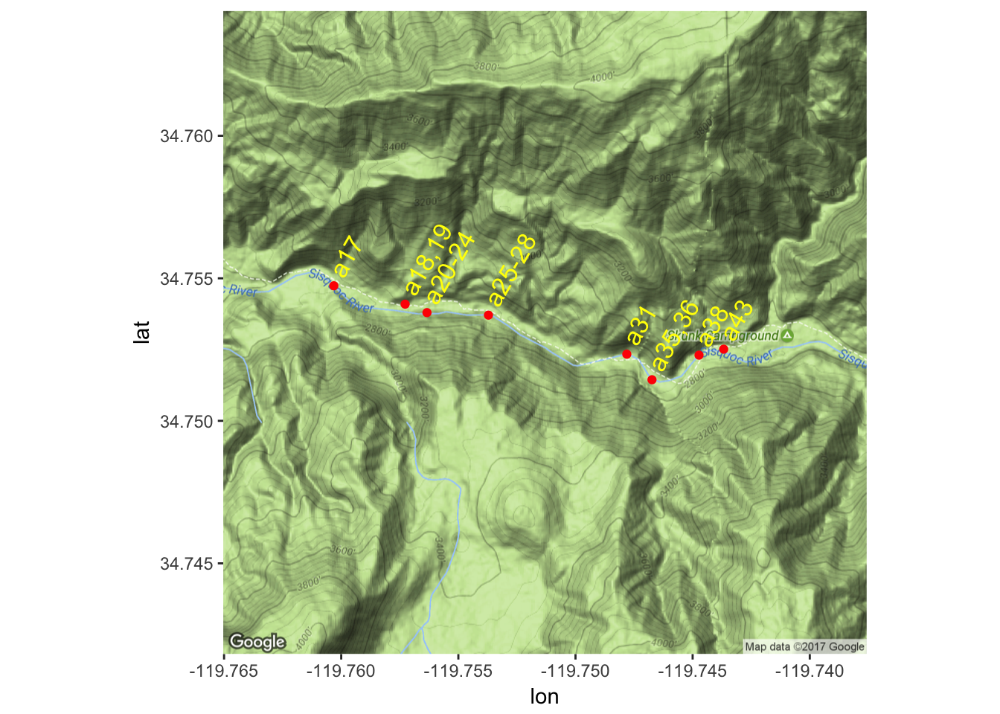
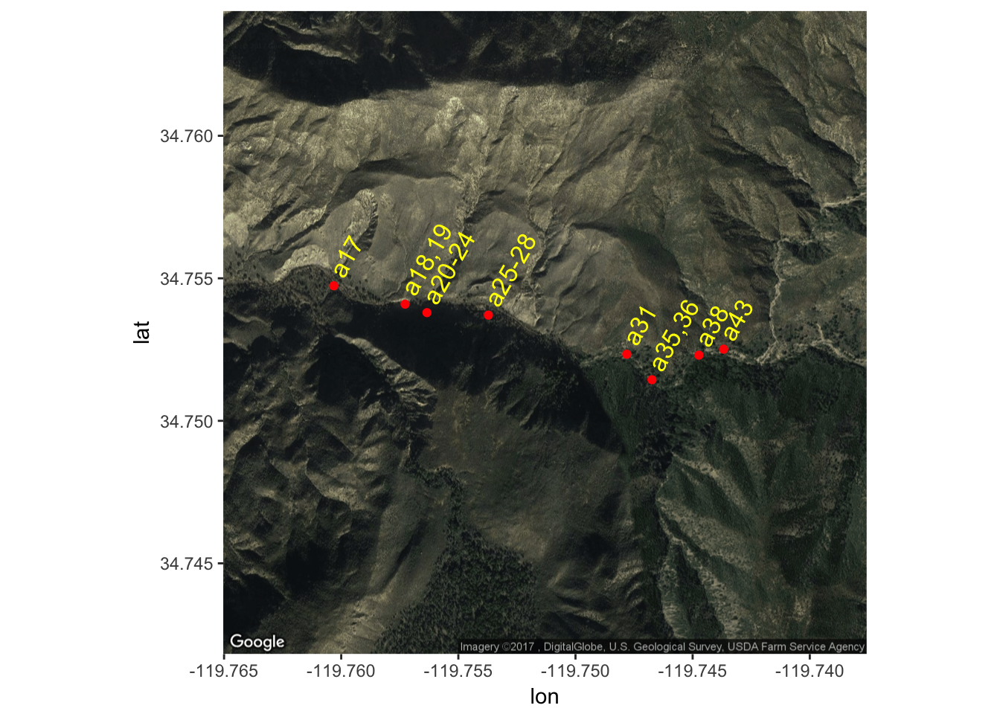
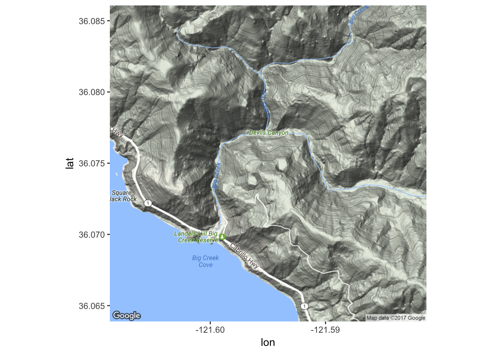
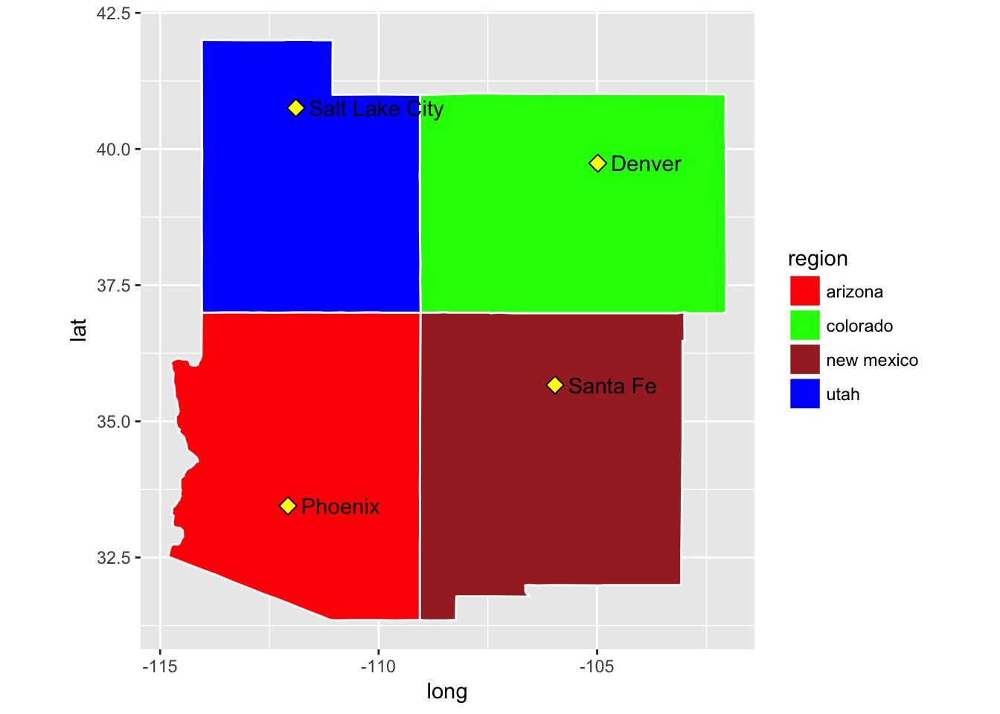
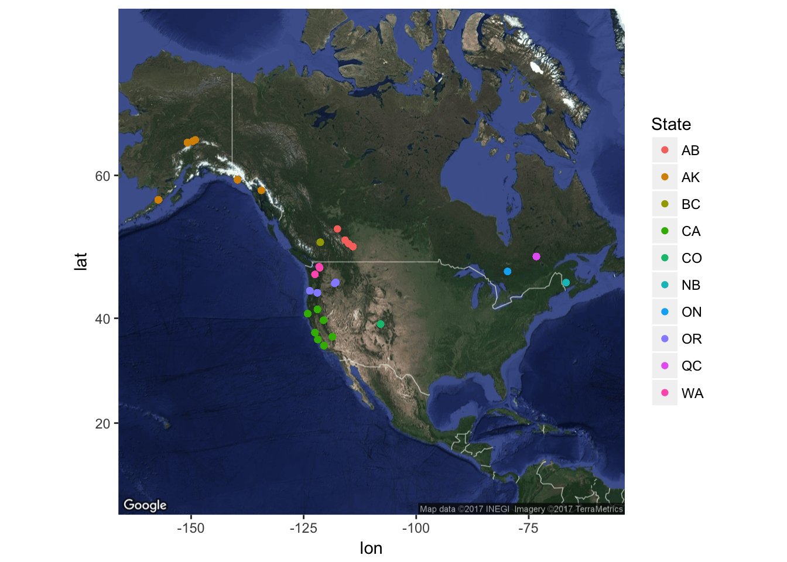

Chapter 8 Week 7: Making Simple Maps with R
Note that if you, the student, wish to run all the code yourself, you should download the inputs directory as a zipped file by going here with a web browser and then clicking the big “Download” button on the right. Once you have downloaded that, unzip it and put the whole inputs directory in the current working directory where you are working with R.
8.1 Intro
For a long time, R has had a relatively simple mechanism, via the maps package, for making simple outlines of maps and plotting lat-long points and paths on them.
More recently, with the advent of packages like sp, rgdal, and rgeos, R has been acquiring much of the functionality of traditional GIS packages (like ArcGIS, etc). This is an exciting development, and is now more easily accessible for the beginner than it was a few years ago when it required installation of specialized external libraries. Today, all the necessary libraries get downloaded when you install the needed packages from CRAN!
More recently, a third approach to convenient mapping, using ggmap has been developed that allows the tiling of detailed base maps from Google Earth or Open Street Maps, etc., upon which spatial data may be plotted.
Today, we are going to focus on mapping using base maps from R’s tried and true maps package and also using the ggmap package. Next week we will cover some more advanced GIS-related topics using rgdal, or sp to plot maps with different projections, etc.
As in our previous explorations in this course, when it comes to plotting, we are going to completely skip over R’s base graphics system and head directly to Hadley Wickham’s ggplot2 package. Hadley has included a few functions that make it relatively easy to interact with the data in R’s maps package, and of course, once a map layer is laid down, you have all the power of ggplot at your fingertips to overlay whatever you may want to over the map.
ggmap is a package that goes out to different map servers and grabs base maps to plot things on, then it sets up the coordinate system and writes it out as the base layer for further ggplotting. It is pretty sweet, but does not support different projections.
8.1.1 Today’s Goals
- Introduce readers to the map outlines available in the
mapspackage- Show how to convert those data into data frames that
ggplot2can deal with - Discuss some
ggplot2related issues about plotting things.
- Show how to convert those data into data frames that
- Use
ggmapto make some pretty decent looking maps
I feel that the above two topics should cover a large part of what people will need for making useful maps of field sites, or sampling locations, or fishing track lines, etc.
For today we will be skipping how to read in traditional GIS “shapefiles” so as to minimize the number of packages that need installation, but keep in mind that it isn’t too hard to do that in R, too. (We’ll do that next week using the ggspatial package).
8.1.2 Prerequisites
You are going to need to install a few packages beyond the tidyverse.
# some standard map packages.
install.packages(c("maps", "mapdata"))
# the ggmap package. Might as well get the bleeding edge version from GitHub
devtools::install_github("dkahle/ggmap")8.1.3 Load up a few of the libraries we will use
library(tidyverse)
library(mapdata)## Loading required package: maps##
## Attaching package: 'maps'## The following object is masked from 'package:purrr':
##
## maplibrary(maps)8.2 Plotting maps-package maps with ggplot
8.2.1 The main players:
- The
mapspackage contains a lot of outlines of continents, countries, states, and counties that have been with R for a long time.
- The
mapdatapackage contains a few more, higher-resolution outlines. - The
mapspackage comes with a plotting function, but, we will opt to useggplot2to plot the maps in themapspackage.
- Recall that
ggplot2operates on data frames. Therefore we need some way to translate themapsdata into a data frame format theggplotcan use. This is done for us with the lovelymap_datafunction in `ggplot2.
8.2.2 Maps in the maps package
- Package
mapsprovides lots of different map outlines and points for cities, etc.
- Some examples:
usa,nz,state,world, etc. Dohelp(package = "maps")to see more information.
8.2.3 Makin’ data frames from map outlines
ggplot2provides themap_data()function.- Think of it as a function that turns a series of points along an outline into a data frame of those points.
- Syntax:
map_data("name")where “name” is a quoted string of the name of a map in themapsormapdatapackage
Here we get a USA map from
maps:usa <- map_data("usa") dim(usa)## [1] 7243 6head(usa)## long lat group order region subregion ## 1 -101.4078 29.74224 1 1 main <NA> ## 2 -101.3906 29.74224 1 2 main <NA> ## 3 -101.3620 29.65056 1 3 main <NA> ## 4 -101.3505 29.63911 1 4 main <NA> ## 5 -101.3219 29.63338 1 5 main <NA> ## 6 -101.3047 29.64484 1 6 main <NA>tail(usa)## long lat group order region subregion ## 7247 -122.6187 48.37482 10 7247 whidbey island <NA> ## 7248 -122.6359 48.35764 10 7248 whidbey island <NA> ## 7249 -122.6703 48.31180 10 7249 whidbey island <NA> ## 7250 -122.7218 48.23732 10 7250 whidbey island <NA> ## 7251 -122.7104 48.21440 10 7251 whidbey island <NA> ## 7252 -122.6703 48.17429 10 7252 whidbey island <NA>Here is the high-res world map centered on the Pacific Ocean from
mapdataw2hr <- map_data("world2Hires") dim(w2hr)## [1] 2274539 6head(w2hr)## long lat group order region subregion ## 1 226.6336 58.42416 1 1 Canada <NA> ## 2 226.6314 58.42336 1 2 Canada <NA> ## 3 226.6122 58.41196 1 3 Canada <NA> ## 4 226.5911 58.40027 1 4 Canada <NA> ## 5 226.5719 58.38864 1 5 Canada <NA> ## 6 226.5528 58.37724 1 6 Canada <NA>tail(w2hr)## long lat group order region subregion ## 2276817 125.0258 11.18471 2284 2276817 Philippines Leyte ## 2276818 125.0172 11.17142 2284 2276818 Philippines Leyte ## 2276819 125.0114 11.16110 2284 2276819 Philippines Leyte ## 2276820 125.0100 11.15555 2284 2276820 Philippines Leyte ## 2276821 125.0111 11.14861 2284 2276821 Philippines Leyte ## 2276822 125.0155 11.13887 2284 2276822 Philippines Leyte
8.2.4 The structure of those data frames
These are pretty straightforward:
longis longitude. Things to the west of the prime meridian are negative, down to -180, and things to the east of the prime meridian run from 0 to positive 180.latis latitude.order. This just shows in which orderggplotshould “connect the dots”regionandsubregiontell what region or subregion a set of points surrounds.group. This is very important!ggplot2’s functions can take a group argument which controls (amongst other things) whether adjacent points should be connected by lines. If they are in the same group, then they get connected, but if they are in different groups then they don’t.- Essentially, having two points in different groups means that
ggplot“lifts the pen” when going between them.
- Essentially, having two points in different groups means that
8.2.5 Plot the USA map
- Maps in this format can be plotted with the polygon geom. i.e. using
geom_polygon(). geom_polygon()drawn lines between points and “closes them up” (i.e. draws a line from the last point back to the first point)- You have to map the
groupaesthetic to thegroupcolumn - Of course,
x = longandy = latare the other aesthetics.
8.2.5.1 Simple black map
By default, geom_polygon() draws with no line color, but with a black fill:
usa <- map_data("usa") # we already did this, but we can do it again
ggplot() +
geom_polygon(data = usa, aes(x = long, y = lat, group = group)) +
coord_quickmap()8.2.5.2 What is this coord_quickmap()?
- This is very important when drawing maps.
- It sets the relationship between one unit in the \(y\) direction and one unit in the \(x\) direction so that the aspect ratio is good for your map.
- Then, even if you change the outer dimensions of the plot (i.e. by changing the window size or the size of the pdf file you are saving it to (in
ggsavefor example)), the aspect ratio remains unchanged.
8.2.5.3 Mess with line and fill colors
Here is no fill, with a red line. Remember, fixed values of aesthetics (i.e., those that are not being mapped to a variable in the data frame) go outside the
aesfunction.ggplot() + geom_polygon(data = usa, aes(x = long, y = lat, group = group), fill = NA, color = "red") + coord_quickmap()Here is violet fill, with a blue line.
gg1 <- ggplot() + geom_polygon(data = usa, aes(x = long, y = lat, group = group), fill = "violet", color = "blue") + coord_quickmap() gg1
8.2.5.4 Adding points to the map
Let’s add black and yellow points at the NMFS lab in Santa Cruz and at the Northwest Fisheries Science Center lab in Seattle.
labs <- tibble( long = c(-122.064873, -122.306417), lat = c(36.951968, 47.644855), names = c("SWFSC-FED", "NWFSC")) gg1 + geom_point(data = labs, aes(x = long, y = lat), shape = 21, color = "black", fill = "yellow", size = 5) + geom_text(data = labs, aes(x = long, y = lat, label = names), hjust = 0, nudge_x = 1)
8.2.5.5 See how important the group aesthetic is
Here we plot that map without using the group aesthetic:
ggplot() +
geom_polygon(data = usa, aes(x = long, y = lat), fill = "violet", color = "blue") +
geom_point(data = labs, aes(x = long, y = lat), shape = 21, color = "black", fill = "yellow", size = 5) +
geom_text(data = labs, aes(x = long, y = lat, label = names), hjust = 0, nudge_x = 1) +
coord_quickmap()That is no bueno! The lines are connecting points that should not be connected!
8.2.6 State maps
We can also get a data frame of polygons that tell us about state boundaries:
states <- map_data("state")
dim(states)## [1] 15537 6head(states)## long lat group order region subregion
## 1 -87.46201 30.38968 1 1 alabama <NA>
## 2 -87.48493 30.37249 1 2 alabama <NA>
## 3 -87.52503 30.37249 1 3 alabama <NA>
## 4 -87.53076 30.33239 1 4 alabama <NA>
## 5 -87.57087 30.32665 1 5 alabama <NA>
## 6 -87.58806 30.32665 1 6 alabama <NA>tail(states)## long lat group order region subregion
## 15594 -106.3295 41.00659 63 15594 wyoming <NA>
## 15595 -106.8566 41.01232 63 15595 wyoming <NA>
## 15596 -107.3093 41.01805 63 15596 wyoming <NA>
## 15597 -107.9223 41.01805 63 15597 wyoming <NA>
## 15598 -109.0568 40.98940 63 15598 wyoming <NA>
## 15599 -109.0511 40.99513 63 15599 wyoming <NA>8.2.6.1 Plot all the states, all colored a little differently
This is just like it is above, but (using the aes function) we can map the fill aesthetic to region and make sure the the lines of state borders are white.
ggplot(data = states) +
geom_polygon(aes(x = long, y = lat, fill = region, group = group), color = "white") +
coord_quickmap() +
guides(fill = FALSE) # do this to leave off the color legendBoom! That is easy.
8.2.6.2 Plot just a subset of states in the contiguous 48:
- Because the
map_data()sends back a data frame, we can use the tidy tools ofdplyrto retain just certain parts of it. For example, we can grab just CA, OR, and WA and then plot them:
west_coast <- states %>% filter(region %in% c("california", "oregon", "washington")) ggplot(data = west_coast) + geom_polygon(aes(x = long, y = lat), fill = "palegreen", color = "black")
8.2.6.3 Man that is ugly!!
- I am just keeping people on their toes. What have we forgotten here?
groupcoord_quickmap()
Let’s put those back in there:
ggplot(data = west_coast) + geom_polygon(aes(x = long, y = lat, group = group), fill = "palegreen", color = "black") + coord_quickmap()
Phew! That is a little better!
8.2.6.4 Zoom in on California and look at counties
Getting the california data is easy:
ca_df <- states %>% filter(region == "california") head(ca_df)## long lat group order region subregion ## 1 -120.0060 42.00927 4 667 california <NA> ## 2 -120.0060 41.20139 4 668 california <NA> ## 3 -120.0060 39.70024 4 669 california <NA> ## 4 -119.9946 39.44241 4 670 california <NA> ## 5 -120.0060 39.31636 4 671 california <NA> ## 6 -120.0060 39.16166 4 672 california <NA>Now, let’s also get the county lines there
counties <- map_data("county") ca_county <- counties %>% filter(region == "california") head(ca_county)## long lat group order region subregion ## 1 -121.4785 37.48290 157 6965 california alameda ## 2 -121.5129 37.48290 157 6966 california alameda ## 3 -121.8853 37.48290 157 6967 california alameda ## 4 -121.8968 37.46571 157 6968 california alameda ## 5 -121.9254 37.45998 157 6969 california alameda ## 6 -121.9483 37.47717 157 6970 california alamedaPlot the state first but let’s ditch the axes gridlines, and gray background by using the super-wonderful
theme_void()which leaves off everything except the geoms, and the guides if they are needed.ca_base <- ggplot(data = ca_df, mapping = aes(x = long, y = lat, group = group)) + coord_quickmap() + geom_polygon(color = "black", fill = "gray") ca_base + theme_void()Now plot the county boundaries in white:
ca_base + theme_void() + geom_polygon(data = ca_county, fill = NA, color = "white") + geom_polygon(color = "black", fill = NA) # get the state border back on top
8.2.6.5 Get some facts about the counties
- The above is pretty cool, but it seems like it would be a lot cooler if we could plot some information about those counties.
- Now I can go to wikipedia or http://www.california-demographics.com/counties_by_population and grab population and area data for each county.
- In fact, I copied their little table on Wikipedia and saved it into
inputs/ca-counties-wikipedia.txt. In full disclosure I also edited the name of San Francisco from “City and County of San Francisco” to “San Francisco County” to be like the others (and not break my regular expression searches) - 2016 Edit! I had originally pumped the matrix resulting from the
str_matchbelow through a few otherstringrfunction (likestr_replace_all) which, apparently, in an older version ofstringrmaintained the matrix form, but in a newer version, squashed everything into a vector. This was kindly noted by hueykwik in this issue. So the code below is modified from what it used to be, but seems to work now. Just as an aside, in the years since I first put this course together (in 2014), things have changed quite a bit in the data analysis world, and, as we are doing in this course again in 2017, we are spending almost all our time in the tidyverse. - Watch this regex fun. Note that if you, the student, wish to run all the code yourself, you should download the
inputsdirectory as a zipped file by going here with a web browser and then clicking the big “Download” button on the right. Once you have downloaded that, unzip it and put the wholeinputsdirectory in the current working directory where you are working with R.
library(stringr)
library(dplyr)
# make a data frame
x <- readLines("inputs/ca-counties-wikipedia.txt")
pop_and_area <- str_match(x, "^([a-zA-Z ]+)County\t.*\t([0-9,]{2,10})\t([0-9,]{2,10}) sq mi$")[, -1] %>%
na.omit() %>%
as.data.frame(stringsAsFactors = FALSE) %>%
mutate(subregion = str_trim(V1) %>% tolower(),
population = as.numeric(str_replace_all(V2, ",", "")),
area = as.numeric(str_replace_all(V3, ",", ""))
) %>%
select(subregion, population, area) %>%
tbl_df()
head(pop_and_area)## # A tibble: 6 × 3
## subregion population area
## <chr> <dbl> <dbl>
## 1 alameda 1578891 738
## 2 alpine 1159 739
## 3 amador 36519 593
## 4 butte 222090 1640
## 5 calaveras 44515 1020
## 6 colusa 21358 1151We now have the numbers that we want, but we need to attach those to every point on polygons of the counties. This is, of course, a job for
left_joinfrom thedplyrpackage, and while we are at it, we will add a column ofpeople_per_milecacopa <- left_join(ca_county, pop_and_area, by = "subregion") %>% mutate(people_per_mile = population / area) head(cacopa)## long lat group order region subregion population area ## 1 -121.4785 37.48290 157 6965 california alameda 1578891 738 ## 2 -121.5129 37.48290 157 6966 california alameda 1578891 738 ## 3 -121.8853 37.48290 157 6967 california alameda 1578891 738 ## 4 -121.8968 37.46571 157 6968 california alameda 1578891 738 ## 5 -121.9254 37.45998 157 6969 california alameda 1578891 738 ## 6 -121.9483 37.47717 157 6970 california alameda 1578891 738 ## people_per_mile ## 1 2139.419 ## 2 2139.419 ## 3 2139.419 ## 4 2139.419 ## 5 2139.419 ## 6 2139.419
8.2.6.6 Now plot population density by county
If you were needing a little more elbow room in the great Golden State, this shows you where you can find it:
elbow_room1 <- ca_base +
geom_polygon(data = cacopa, aes(fill = people_per_mile), color = "white") +
geom_polygon(color = "black", fill = NA) +
theme_void()
elbow_room1 
8.2.6.7 Lame!
- The popuation density in San Francisco is so great that it makes it hard to discern differences between other areas.
- This is a job for a scale transformation. Let’s take the log-base-10 of the population density.
- Instead of making a new column which is log10 of the
people_per_milewe can just apply the transformation in the gradient using thetransargument
elbow_room1 + scale_fill_gradient(trans = "log10")8.2.6.8 Still not great
I personally like more color than ggplot uses in its default gradient. In that respect I gravitate more toward Matlab’s default color gradient. Can we do something similar with ggplot? (It turns out we can…my apologies to those purists who would tell me that rainbow colors are not good for showing quantitative scales—I think that in some cases they work reasonaly well…for example the following…of course, there are times when they work abysmally, as well.)
eb2 <- elbow_room1 +
scale_fill_gradientn(colours = rev(rainbow(7)),
breaks = c(2, 4, 10, 100, 1000, 10000),
trans = "log10")
eb2
That is reasonably cool.
8.2.7 zoom in?
Note that the scale of these maps from package maps are not great. We can zoom in to the Bay region, and it sort of works scale-wise, but if we wanted to zoom in more, it would be tough.
Let’s try!
eb2 + xlim(-123, -121.0) + ylim(36, 38)
- Whoa! That is an epic fail. Why?
- Recall that
geom_polygon()connects the end point of agroupto its starting point. - And the kicker: the
xlimandylimfunctions inggplot2discard all the data that is not within the plot area.- Hence there are new starting points and ending points for some groups (or in this case the black-line permiter of California) and those points get connected. Not good.
8.2.8 True zoom.
- If you want to keep all the data the same but just zoom in, you can use the
xlimandylimarguments tocoord_cartesian(). Though, to keep the aspect ratio correct we must usecoord_quickmap()instead ofcoord_cartesian(). This chops stuff off but doesn’t discard it from the data set:
eb2 + coord_quickmap(xlim = c(-123, -121.0), ylim = c(36, 38))
Side Note: The coastline in the maps package is pretty low-resolution, and looks like a heap of bird droppings when you zoom way in on it.
If you want to get much more accurate coastlines, you can use better data sources like NOAA’s GSHHS: A Global Self-consistent, Hierarchical, High-resolution Geography Database. I have a blog post about that at http://eriqande.github.io/2014/12/17/compare-map-resolutions.html.
8.3 ggmap
The ggmap package is a nice way to make quick maps with decent backgrounds! We will talk next week about how to get better-looking maps at some resolutions by using shapefiles and rasters from naturalearthdata.com but ggmap will get you 95% of the way there with a lot less of the work!
If you don’t have it, get the most updated version off GitHub:
devtools::install_github("dkahle/ggmap")And load it like so:
library(ggmap)## Google Maps API Terms of Service: http://developers.google.com/maps/terms.## Please cite ggmap if you use it: see citation("ggmap") for details.Note, if you use it in a paper, please cite it:
citation("ggmap")##
## To cite ggmap in publications, please use:
##
## D. Kahle and H. Wickham. ggmap: Spatial Visualization with
## ggplot2. The R Journal, 5(1), 144-161. URL
## http://journal.r-project.org/archive/2013-1/kahle-wickham.pdf
##
## A BibTeX entry for LaTeX users is
##
## @Article{,
## author = {David Kahle and Hadley Wickham},
## title = {ggmap: Spatial Visualization with ggplot2},
## journal = {The R Journal},
## year = {2013},
## volume = {5},
## number = {1},
## pages = {144--161},
## url = {http://journal.r-project.org/archive/2013-1/kahle-wickham.pdf},
## }8.3.1 Three examples
- I am going to run through three examples. Working from the small spatial scale up to a larger spatial scale.
- Named “sampling” points on the Sisquoc River from the “Sisquoctober Adventure”
- A GPS track from a short bike ride in Wilder Ranch.
- Fish sampling locations from the coded wire tag data base.
8.3.2 How ggmap works
- ggmap simplifies the process of downloading base maps from [Google Maps(https://www.google.com/maps) or Open Street Map or Stamen Maps to use in the background of your plots.
- It also sets the axis scales, etc, in a nice way.
- Once you have gotten your maps, you make a call with
ggmap()much as you would withggplot() - Let’s do by example.
8.3.3 Sisquoctober
Here is a small data frame of points from the Sisquoc River.
sisquoc <- read.table("inputs/sisquoc-points.txt", sep = "\t", header = TRUE) sisquoc## name lon lat ## 1 a17 -119.7603 34.75474 ## 2 a20-24 -119.7563 34.75380 ## 3 a25-28 -119.7537 34.75371 ## 4 a18,19 -119.7573 34.75409 ## 5 a35,36 -119.7467 34.75144 ## 6 a31 -119.7478 34.75234 ## 7 a38 -119.7447 34.75230 ## 8 a43 -119.7437 34.75251# note that ggmap tends to use "lon" instead of "long" for longitude.
You can grab Google map tiles by specifying a center and a zoom value that can be between 3 and 20 inclusive. Google map tiles are always squarish tiles. A zoom level of 3 is “world scale”, while a zoom value of 20 is “house scale.” Our points in the Sisquoc are at a neighborhood scale, so we will try zoom = 15. Truth be told it takes some fiddling to get the zoom right.
8.3.3.1 Google’s “Terrain-map” style
This is a nice choice for natural areas where you want to see some topography:
get_googlemap(center = c(mean(sisquoc$lon), mean(sisquoc$lat)), zoom = 15) %>%
ggmap() +
geom_point(data = sisquoc, mapping = aes(x = lon, y = lat), color = "red") +
geom_text(data = sisquoc, aes(label = name), angle = 60, hjust = 0,
color = "yellow", nudge_x = .0001, nudge_y = .0004, size = 4.5)## Source : https://maps.googleapis.com/maps/api/staticmap?center=34.753117,-119.751324&zoom=15&size=640x640&scale=2&maptype=terrain
8.3.3.2 Google’s “Satellite” maptype
This can be nice too…
get_googlemap(center = c(mean(sisquoc$lon), mean(sisquoc$lat)),
zoom = 15,
maptype = "satellite") %>%
ggmap() +
geom_point(data = sisquoc, mapping = aes(x = lon, y = lat), color = "red") +
geom_text(data = sisquoc, aes(label = name), angle = 60, hjust = 0,
color = "yellow", nudge_x = .0001, nudge_y = .0004, size = 4.5)## Source : https://maps.googleapis.com/maps/api/staticmap?center=34.753117,-119.751324&zoom=15&size=640x640&scale=2&maptype=satellite
8.3.4 Big Creek in Big Sur
I have been involved in some work at Big Creek, and would like to replace one of our maps with something better. So, out of curiosity, let’s see what Big Creek looks like with Google Maps.
get_googlemap(center = c(-121.595, 36.075), zoom = 15, maptype = "terrain") %>%
ggmap() ## Source : https://maps.googleapis.com/maps/api/staticmap?center=36.075,-121.595&zoom=15&size=640x640&scale=2&maptype=terrain
Hmm…that is quite nice.
8.3.4.1 Stamen maps
Can we get the stamen maps to work? Yes, but, for field sites and such, they don’t seem nearly as useful as Google Maps. Here is some code but we don’t bother running it because it looks really bad anyway.
bounds <- c(left = -119.77,
bottom = 34.750,
right = -119.73,
top = 34.755)
# note, if you get these in the wrong order you get a totally
# uninformative error message.
sisquoc_stamen <- get_stamenmap(bbox = bounds, maptype = "terrain", zoom = 16)
# this looks like crap!
# maybe at bigger zoom levels it would be OK.8.3.5 How about a bike ride?
- I was riding my bike one day with my phone and downloaded the GPS readings at short intervals.
We can plot the route like this:
bike <- read.csv("inputs/bike-ride.csv") head(bike)## lon lat elevation time ## 1 -122.0646 36.95144 15.8 2011-12-08T19:37:56Z ## 2 -122.0646 36.95191 15.5 2011-12-08T19:37:59Z ## 3 -122.0645 36.95201 15.4 2011-12-08T19:38:04Z ## 4 -122.0645 36.95218 15.5 2011-12-08T19:38:07Z ## 5 -122.0643 36.95224 15.7 2011-12-08T19:38:10Z ## 6 -122.0642 36.95233 15.8 2011-12-08T19:38:13Zbikemap1 <- get_googlemap(center = c(-122.080954, 36.971709), zoom = 14, maptype = "hybrid")## Source : https://maps.googleapis.com/maps/api/staticmap?center=36.971709,-122.080954&zoom=14&size=640x640&scale=2&maptype=hybridggmap(bikemap1) + geom_path(data = bike, aes(colour = elevation), size = 3, lineend = "round") + scale_color_gradientn(colours = rainbow(7), breaks = seq(25, 200, by = 25))- See how we have mapped elevation to the color of the path using our rainbow colors again.
- Note that getting the right zoom and position for the map is sort of trial and error. You can go to google maps to figure out where the center should be: double click a location to get the lat-long of any spot.
There is a
make_bboxfunction that is supposed to expedite figuring out the zoom, but it has never really worked well for me with Google maps at large zooms. We will see it in action, below, however.
8.3.6 Fish sampling locations
For this, I have whittled down some stuff in the coded wire tag data base to georeferenced marine locations in British Columbia where at least one Chinook salmon was recovered between 2000 and 2012 inclusive. To see how I did all that you can check out this
Let’s have a look at the data:
bc <- readRDS("inputs/bc_sites.rds")
# look at some of it:
bc %>%
select(state_or_province:sub_location, longitude, latitude)## # A tibble: 1,113 × 9
## state_or_province water_type sector region area location sub_location
## <chr> <chr> <chr> <chr> <chr> <chr> <chr>
## 1 2 M S 22 016 THOR IS 01
## 2 2 M N 26 012 MITC BY 18
## 3 2 M S 22 015 HARW IS 02
## 4 2 M N 26 006 HOPK PT 01
## 5 2 M S 23 017 TENT IS 06
## 6 2 M S 28 23A NAHM BY 02
## 7 2 M N 26 006 GIL IS 06
## 8 2 M S 27 024 CLEL IS 06
## 9 2 M S 27 23B SAND IS 04
## 10 2 M N 26 012 DUVA IS 16
## # ... with 1,103 more rows, and 2 more variables: longitude <dbl>,
## # latitude <dbl>So, we have 1,113 points to play with.
8.3.6.1 What do we hope to learn?
These locations in BC are hierarchically structured. I am basically interested in how close together sites in the same “region” or “area” or “sector” are, and pondering whether it is OK to aggregate fish recoveries at a certain level for the purposes of getting a better overall estimate of the proportion of fish from different hatcheries in these areas.
- So, pretty simple stuff. I just want to plot these points on a map, and paint them a different color according to their sector, region, area, etc.
Let’s just enumerate things first, using
dplyr:bc %>% count(sector, region, area)## Source: local data frame [42 x 4] ## Groups: sector, region [?] ## ## sector region area n ## <chr> <chr> <chr> <int> ## 1 48 008 1 ## 2 48 028 1 ## 3 48 311 1 ## 4 N 25 001 33 ## 5 N 25 003 15 ## 6 N 25 004 44 ## 7 N 25 02E 2 ## 8 N 25 02W 34 ## 9 N 26 006 28 ## 10 N 26 007 23 ## # ... with 32 more rowsbc %>% count(sector, region)## Source: local data frame [11 x 3] ## Groups: sector [?] ## ## sector region n ## <chr> <chr> <int> ## 1 48 3 ## 2 N 25 128 ## 3 N 26 174 ## 4 S 22 191 ## 5 S 23 136 ## 6 S 24 93 ## 7 S 27 247 ## 8 S 28 23 ## 9 S 61 49 ## 10 S 62 66 ## 11 S AF 3That looks good. It appears like we could probably color code over the whole area down to region, and then down to area within subregions.
8.3.6.2 Makin’ a map.
- Let us try to use
make_bbox()to see if it will work better when used on a large scale. Note: in order to use an approximate bounding box, we have to useget_map()rather thanget_googlemap(). Doing so looks like this…
# compute the bounding box
bc_bbox <- make_bbox(lat = latitude, lon = longitude, data = bc)
bc_bbox## left bottom right top
## -133.63297 47.92497 -122.33652 55.80833# grab the maps from google
bc_big <- get_map(location = bc_bbox, maptype = "terrain", source = "google")## Warning: bounding box given to google - spatial extent only approximate.## converting bounding box to center/zoom specification. (experimental)## Source : https://maps.googleapis.com/maps/api/staticmap?center=51.86665,-127.98475&zoom=6&size=640x640&scale=2&maptype=terrain&language=en-EN# plot the points and color them by sector
ggmap(bc_big) +
geom_point(data = bc, mapping = aes(x = longitude, y = latitude, color = sector))- Cool! That was about as easy as could be. North is in the north, south is in the south, and the three reddish points are clearly aberrant ones at the mouths of rivers.
8.3.6.3 Coloring it by region
- We should be able to color these all by region to some extent (it might get overwhelming), but let us have a go with it.
- Notice that region names are unique overall (not just within N or S) so we can just color by region name.
ggmap(bc_big) +
geom_point(data = bc, mapping = aes(x = longitude, y = latitude, color = region))- Once again that was dirt easy, though at this scale with all the different regions, it is hard to resolve all the colors. In general, it gets hard to resolve more than 7 or 8 colors on a map.
8.4 In-class review and short assignment
A lot of stuff went by in the last few sections. Here are the key players, in review:
Using the maps package with ggplot2:
library(maps)this loads the library that has the map data.map_data()this function fromggplot2grabs map data from themapspackage and returns it as a data frameggplotcan handle. Choices for the arguments are many. Some common ones are"states","counties","usa", etc.geom_polygon()plots boundaries from the maps package.- Don’t forget:
group = groupin the aesthetics! coord_quickmap()ggplot function to get a good aspect ratio for a lat-long plot. (Note that if you want to do projections, withmapsdata you can usecoord_map()…next week, maybe.)- Zoom in without improper chopping with
coord_quickmap(xlim = ..., ylim = ...)
Using ggmap:
- Get the latest version from GitHub:
devtools::install_github("dkahle/ggmap") get_googlemap(center = c(long, lat), zoom = 3 to 20)- Put the output of
get_googlemap()into theggmap()function and then proceed as you would with ggplot. - Google Maps maptypes: “terrain”, “satellite”, “hybrid”
8.4.1 Short assignment of plotting with maps
If you don’t have your own data to start plotting, you can try to make the following plot of the four “four-corners” states and their capitals. I have a list of capitals in the course repository that I read in like this:
caps <- read_csv("inputs/state_capitals.csv")## Parsed with column specification:
## cols(
## state = col_character(),
## capital = col_character(),
## lat = col_double(),
## long = col_double()
## )It looks like this:
caps## # A tibble: 50 × 4
## state capital lat long
## <chr> <chr> <dbl> <dbl>
## 1 Alabama Montgomery 32.36154 -86.27912
## 2 Alaska Juneau 58.30194 -134.41974
## 3 Arizona Phoenix 33.44846 -112.07384
## 4 Arkansas Little Rock 34.73601 -92.33112
## 5 California Sacramento 38.55560 -121.46893
## 6 Colorado Denver 39.73917 -104.98417
## 7 Connecticut Hartford 41.76700 -72.67700
## 8 Delaware Dover 39.16192 -75.52675
## 9 Florida Tallahassee 30.45180 -84.27277
## 10 Georgia Atlanta 33.76000 -84.39000
## # ... with 40 more rowsYou can quickly download the CSV file from here. But, if you downloaded the inputs directory and placed it in the right spot to run through the code above, you then already have this.
Once you have that, try to put together a map that looks like this: 
OK, now, to display your mad dplyr skills and mapping capabilities, do the gyrations necessary to do this:

8.4.2 Short assignment of plotting with ggmap()
Here are the locations of 357 Wilson’s warblers sampled in North America. You can download them from here if you don’t already have the inputs.
wiwa <- readRDS("inputs/breeding_wiwa_isotopes.rds")
# look at the range of the lat longs
range(wiwa$lat)## [1] 35.195 63.716range(wiwa$long)## [1] -157.283 -66.700The data frame looks like this:
wiwa## # A tibble: 357 × 15
## ID Short_Name Isotope.Value Source Species Region Location
## <chr> <chr> <dbl> <chr> <chr> <lgl> <chr>
## 1 01N0729 wCAHU01 -94.99667 Kelly_Dec2013 WIWA NA Hume
## 2 01N0730 wCAHU02 -119.67951 Kelly_Dec2013 WIWA NA Hume
## 3 01N0731 wCAHU03 -102.67823 Kelly_Dec2013 WIWA NA Hume
## 4 01N0732 wCAHU04 -100.38197 Kelly_Dec2013 WIWA NA Hume
## 5 01N0733 wCAHU05 -102.88861 Kelly_Dec2013 WIWA NA Hume
## 6 01N7414 wAKUG11 -102.90747 Kelly_Dec2013 WIWA NA Ugashik_2
## 7 01N7415 wAKUG12 -120.25431 Kelly_Dec2013 WIWA NA Ugashik_2
## 8 01N7416 wAKUG13 -116.58946 Kelly_Dec2013 WIWA NA Ugashik_2
## 9 01N7417 wAKUG14 -124.93382 Kelly_Dec2013 WIWA NA Ugashik_2
## 10 01N7418 wAKUG15 -114.09978 Kelly_Dec2013 WIWA NA Ugashik_2
## # ... with 347 more rows, and 8 more variables: Near_Town <chr>,
## # State <chr>, Country <chr>, Kristina_Notes <lgl>, Age <chr>,
## # lat <dbl>, long <dbl>, stage <chr>Let’s make a google_map with some of that info on it—namely the locations of the samples colored by the State or Province that they are in.
## Source : https://maps.googleapis.com/maps/api/staticmap?center=49,-110&zoom=3&size=640x640&scale=2&maptype=hybrid
That shows one of the limitations of plotting things in unprojected latitude and longitude coordinates: Alaska gets all inflated. Next week, if everyone really wants to see how we might overcome that using the Natural Earth Data rasters, we might just be able to do so.